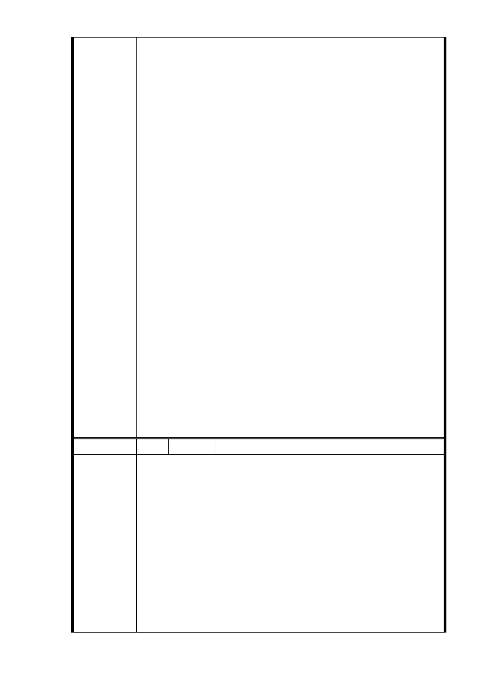

局會辦理公開徵求投資人作業，未來投資申請人之開發能
力、財務能力及權益分配比例均會列為評審項目，俟評選
出投資人後，再簽訂土地開發投資契約書。
3.有關本開發案未來權益分配狀況會受周遭區域環境、基地
面積與完整性、使用分區、規劃產品定位及市場行情等因
素影響。故本府捷運局於說明會或座談會時預估比例係為
向地主說明之假設參考值，並非本開發案最終權益分配比
例。後續會依地主所持有土地之貢獻值與投資人所出之建
物建造成本二者做相對應之比較值，比較出來後即為所謂
的權益分配比例。未來會委託辦理土地鑑價及建造成本之
鑑定作業，依評估後之土地成本及建造成本，再與投資人
所提送之建議書做比對，將相關資料提報「臺北市臺北都
會區大眾捷運系統土地開發權益分配審議委員會」審議，
確認與投資人協商底線，俟協商確定後，方得確定權益分
配比例。
4.捷運建設之興建因目前中央及地方財政並不寬裕，故國發
會及財主單位皆會要求地方主管機關負擔部分建設之經
費，對本市的補助，係扣掉自償率後，中央就興建捷運所
衍生之外部效益，必須納入成本考量，故依大眾捷運系統
土地開發辦法及相關法規之規定給予捷運獎勵，其中 1/2
捷運獎勵係給予地主，另外的 1/2 捷運獎勵由本府取得後
挹注捷運建設所需之經費。另土地開發區(捷)用地之獎勵
原則，無論個案或專案，在執行上應有一致性之原則，並
不會因為單一個案而影響整個捷運建設容積獎勵之機制。
一、R04 站南側捷二用地，維持公展範圍（基地面積 3,328
委員會決議
㎡），並辦理土地開發。
二、同「市府回應意見」。
編 號 9-2 陳情人 把明貽（R04 捷二）
有關「信義捷運線東延段 R04 車站南側基地聯合開發案」，
堅決反對：台北市政府違背郝龍斌市長「由當事人自行決定
是否參與聯合開發案」之承諾，未經住戶同意逕將信義區永
春段三小段 351 地號之土地納入本案。更反對「捷運局」：
圖謀一己之利，為「避禍」卻「嫁禍」於無辜住戶，更以「莫
陳情理由
須有」之理由及「推諉權責」之作為，提供「不確定」之住
戶權益保障為賭注籌碼，「誆愚」住戶，罔顧「居住正義」
及人民享有「自由居住」之憲法保障，減損住戶居室面積，
以遂其迫使住戶無法居住而遷離之目地。
故堅決要求：
台北市政府、台北市政府都市發展局、台北市政府捷運工程
局於台北市都市計畫委員會完成審議前，應立即撤案或作變
- 37 -